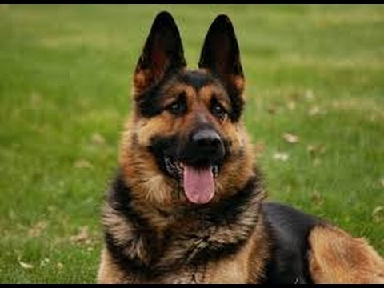

LAS RAZAS DE PERROS MAS POPULARES
| NOMBRE | DESCRIPCION | IMAGEN |
|---|
| Labrador Retriever |
Cuando vemos una imagen de “familia perfecta”, observamos al padre, a la madre, al hijo, a la hija… y a un Labrador en un jardín precioso con una enorme casa. Desde la década del 90 esta raza es la elegida por los que tienen niños, porque se trata de un animal bondadoso, cariñoso, muy inteligente y paciente con los más pequeños. El Labrador Retriever siempre querrá jugar, zambullirse en el agua y lamernos la cara. Debes tener cuidado porque suelen sufrir obesidad por ser tan glotones. Fuente:https://myanimals.com/es/cuales-las-razas-perro-mas-populares/ |
|
| Pastor Alemán |
Los orígenes de esta raza sajona se remontan a la época en que la mayoría de las personas trabajaba en el campo. Poco a poco fue convirtiéndose en un animal de compañía y hoy es una de los razas de perro más populares del mundo. Se trata de seres sumamente inteligentes, que pueden entrenarse fácilmente, aunque a veces pueden ser algo tercos, ellos Necesitan un dueño que haga de líder para enseñarle. La socialización y el entrenamiento de obediencia son fundamentales desde corta edad. El Pastor Alemán es muy protector y atacará si la vida de sus seres queridos está en peligro.Fuente:https://myanimals.com/es/cuales-las-razas-perro-mas-populares/ |
 |
| Beagle |
En los últimos tiempos este perro se volvió muy popular. Es de talla mediana y “fue lanzado al estrellato” debido al dibujo animado Snoopy. El Beagle es originario de Gran Bretaña y muy común en Estados Unidos. Durante siglos se usó para cazar conejos y aves. En la actualidad, además de ser de compañía, se emplea en tareas de detección de drogas y explosivos por la policía. Es un canino bastante tolerante con otros perros, y muy tranquilo, afectuoso y juguetón. Fuente:https://myanimals.com/es/cuales-las-razas-perro-mas-populares/ |
 |
| Yorkshire Terrier |
Pertenece al grupo de los pequeños y es una de las razas de perro más populares. Fue criado para cazar roedores y alimañas. El Yorkshire Terrier es muy enérgico y a pesar de su tamaño ha demostrado ser bastante valiente. Aunque sea algo territorial, puede vivir con otras mascotas. Es afectuoso con sus dueños y desconfiado con los extraños. Si no se lo adiestra desde cachorro, puede estar continuamente estresado y ansioso. Fuente:https://myanimals.com/es/cuales-las-razas-perro-mas-populares/ |
 |